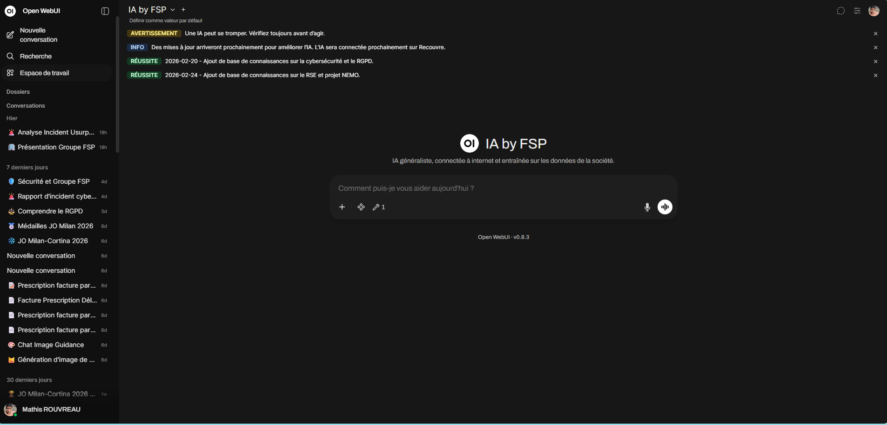
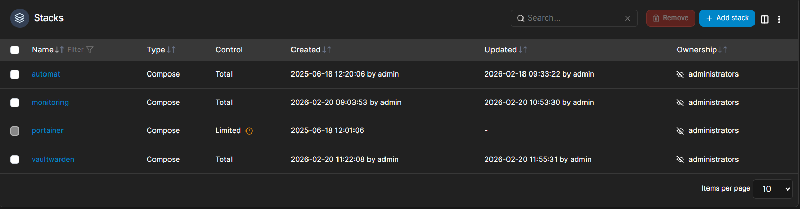
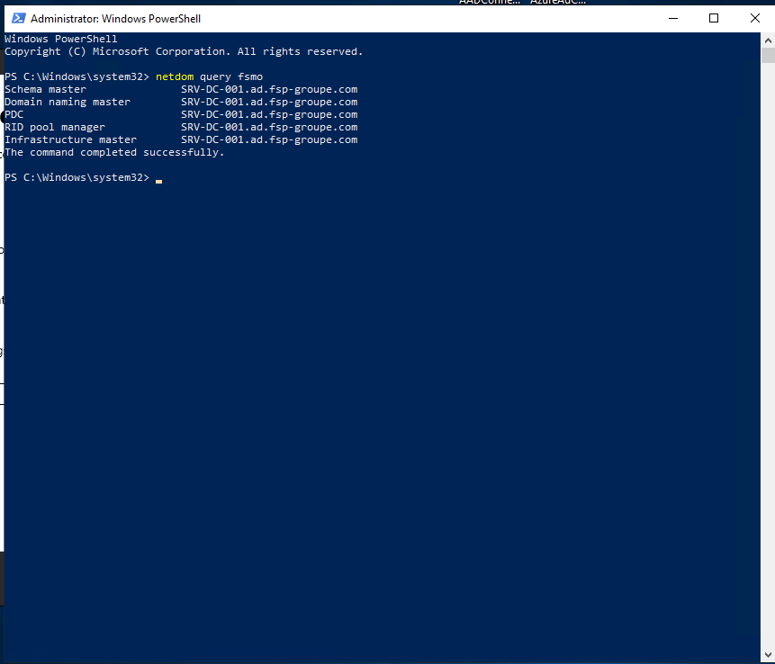

Mathis Rouvreau
Administrateur Systèmes & Réseaux — Alternant chez AGIR Recouvrement
Mon parcours en 3 piliers
AP2 — MACODEMY
Infrastructure réseau complète pour un établissement scolaire fictif.
Équipe : Hugo, Mathis, Evan
AP3 — MDS49
Infra sécurisée pour la Maison Départementale des Sports 49 — 7 semaines, méthode Agile.
Équipe : Mathis, Evan, Julien
Alternance — AGIR
Administrateur Systèmes & Réseaux chez AGIR Recouvrement (Groupe FSP), Cholet.
~130 salariés · 13M€+ CA
Le service IT chez AGIR
Je sais concevoir une infrastructure réseau
Ce que j'ai réalisé
- Segmentation VLAN (802.1Q) avec plans d'adressage
- Active Directory centralisé, OUs et groupes de sécurité
- DHCP multi-scopes par VLAN + DNS interne
- Routage inter-VLAN (OSPF) + NAT/PAT vers Internet
- Serveur web en DMZ (Apache2 / Debian)
Ce que ça prouve
- Conception d'architectures réseau segmentées
- Configuration d'équipements Cisco (switches, routeurs)
- Mise en place de services d'annuaire et réseau
- Intégration de postes clients dans un domaine
Isolation VLAN · DHCP · NAT/PAT · Accessibilité
Je sais sécuriser et superviser un SI
Sécurisation AD — Stage
- Audit vulnérabilités (BloodHound, PingCastle)
- 50+ GPO de sécurité déployées
- MFA activé pour 100% des utilisateurs
- Accès conditionnels Azure AD
- Désactivation protocoles obsolètes (SMBv1…)
Supervision & Auth — AP3
- Zabbix : monitoring temps réel SNMP
- Dashboard d'alertes automatisées
- FreeRADIUS + WPA2-Enterprise (802.1X)
- Authentification WiFi via Active Directory
Je sais automatiser les processus IT
demande web
manager par mail
Graph API / PS
mail + traçabilité
expiration / cron
Je sais déployer des services conteneurisés et intégrer l'IA

Open WebUI — IA interne du Groupe FSP

4 stacks Compose : automat, monitoring, portainer, vaultwarden
Formation IA — Service IT
- Prompt Engineering — rédiger des requêtes efficaces
- RAG — enrichir l'IA avec les données internes
- MCP — connecter l'IA aux outils métier
Infrastructure
- 7 services Docker Compose
- Traefik + HTTPS auto (Step-CA)
- Vaultwarden + synchro LDAP/AD
Je sais assurer la continuité de service
5 rôles / ntdsutil
reconfig horloge
migration instance
repadmin + scripts

netdom query fsmo — 5 rôles sur SRV-DC-001
Et après le BTS ?
Licence Informatique
Poursuite en Licence Info à AGIR (alternance) — septembre 2026
Objectif
Licence Info en alternance chez AGIR, puis Master ou école spécialisée en cybersécurité
En deux ans de BTS SIO SISR et d'alternance chez AGIR Recouvrement, j'ai acquis des compétences solides en administration systèmes, sécurité, automatisation et gestion d'infrastructure — validées par des réalisations concrètes en entreprise et en projet scolaire.
Merci pour votre attention
Des questions ?